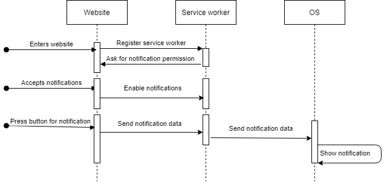

Demo
Notifications are {{permissions}}You need to accept notifications. Click on the 🛈 and choose allow for the notifications. This does not work in Incognito mode!
Most recent notification action: {{result}}
Message of the notification: {{notification}}
Priority: {{priority}}
Sequence diagram
Sequence diagram based on my takes of how the program works.
Description
This PoC is written with the Notification API from Angular. The notifications are being processed by an Angular Service Worker.
A service worker is a script that your browser runs in the background, seperate from a web page. This lets us work with features that do not need a
web page or user interaction.
Service workers only work on trusted website. So your website needs to have an SSL certificate, otherwise the service worker will not work.
If you press on the 🛈 in your URL bar, you can see if the notifications are allowed. These needs to be allowed to receive the push notifications.
If these are blocked, the notifications will not show up. If the user has blocked the notifications, the only way to ask for permission again is if the user himself clicks on the 🛈
and grants permission again.
Deployment
Because service workers only work in a secure web server, this website is hosted on Firebase Hosting. Using the Firebase CLI I can deploy a build of the website.
Every time I have a new feature, this will be updated on this website.
Because this website is secure, I can test this on mobile devices as well.
Feedback
I mixed the program with promises and observables. Best practice would be to use one or the other. You can convert promises into observables.
The feedback that was given was mostly how to write the software with the best practices. In my next PoC I am going to use only observables.
I need to stop using any types. Best practice would be to create a model for the different types. In this PoC it is not that necessary. If the type is getting
to complex, I can make an easier model like a view model.
What is the next step?
This PoC requires the user to press the button. That way the user can receive a push notification. The next step should be that an external source can send the notification.
Not only the current user needs to receive a message. Employees that work with the machines, should get this message as well. In the next PoC, an external source can send a notification
and multiple clients will receive the same push notification
| Google Chrome | Mozilla Firefox | Microsoft Edge | |
|---|---|---|---|
| Windows 10 | ✅ | ✅ / ❌ 1 | ✅ |
| MacOSX | ✅ | ||
| > Android 9 | ✅ | ||
| iOS 13 | ❌ 2 |
1: Works on browser level but notifications do not show up in the notification centre of the OS.
2: As of September 2020, Safari and Chrome show a blank screen.